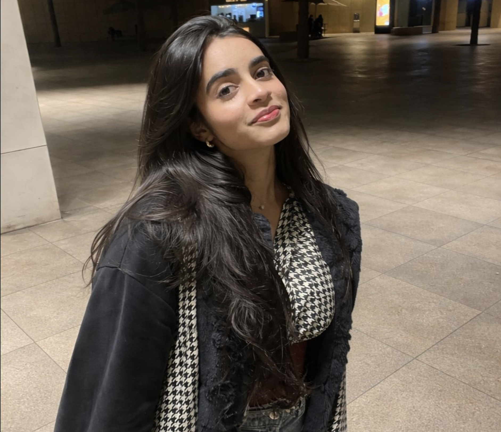
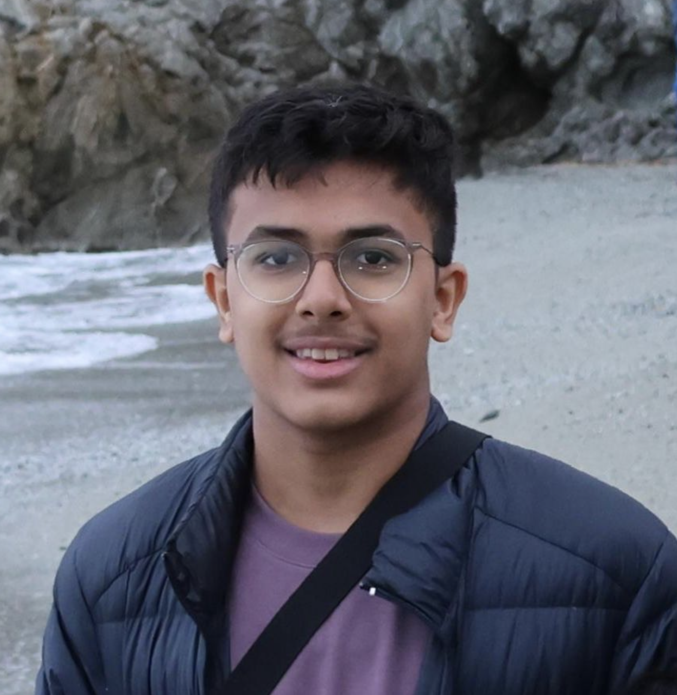
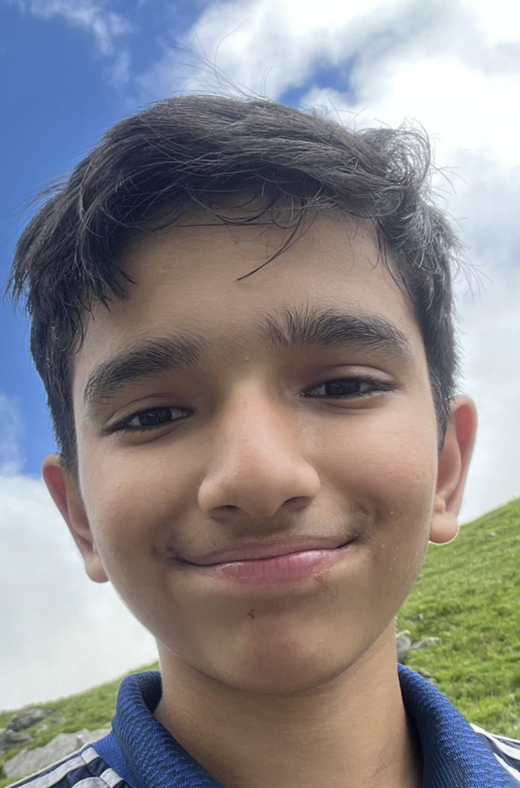

Our Team

Shrinika Bhavsar
Ideation and Product Strategy Lead

Taksh Kothari
Project Manager and Systems Engineer

Aadhar Mandhotra
Design Lead and System Engineer

Vedansh Gupta
Web Development Lead and Component Strategist